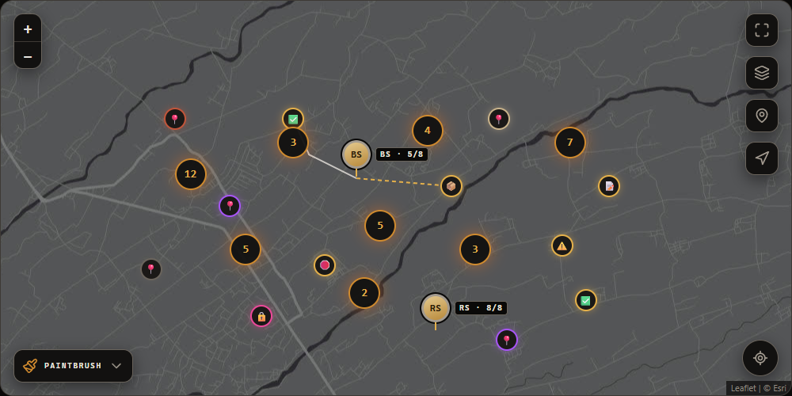
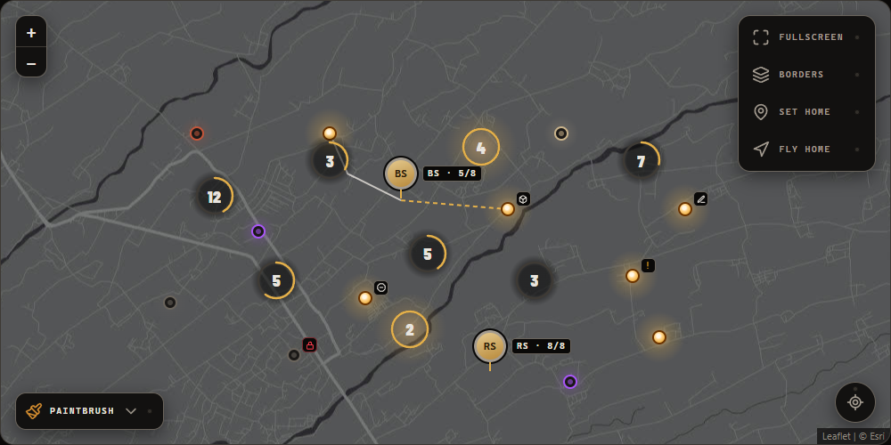
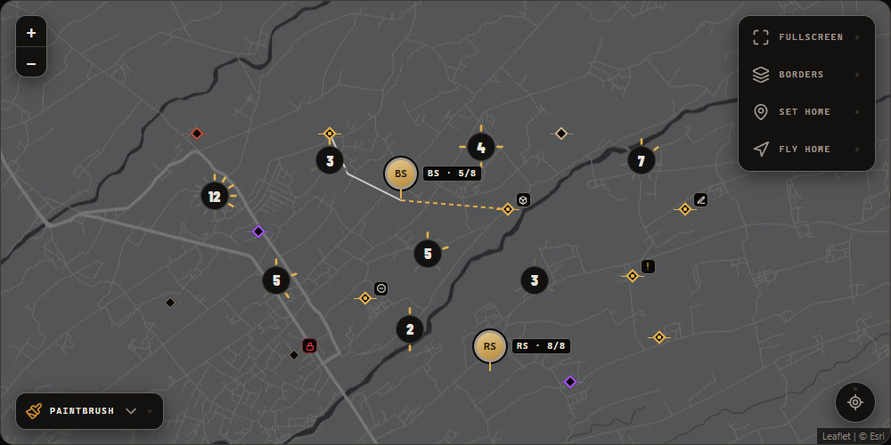
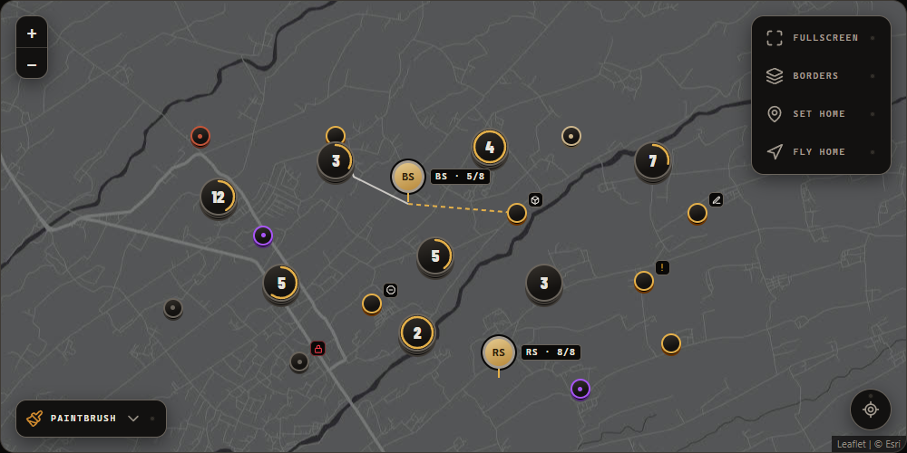
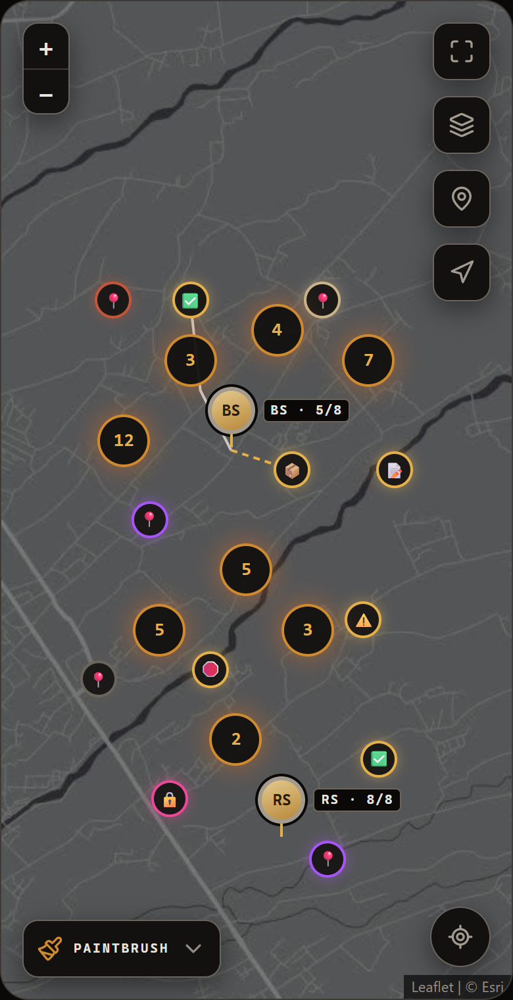
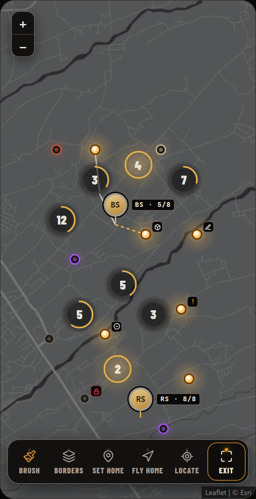
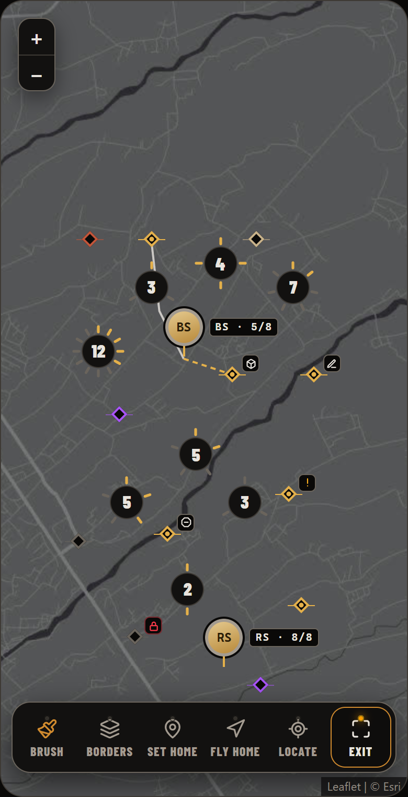
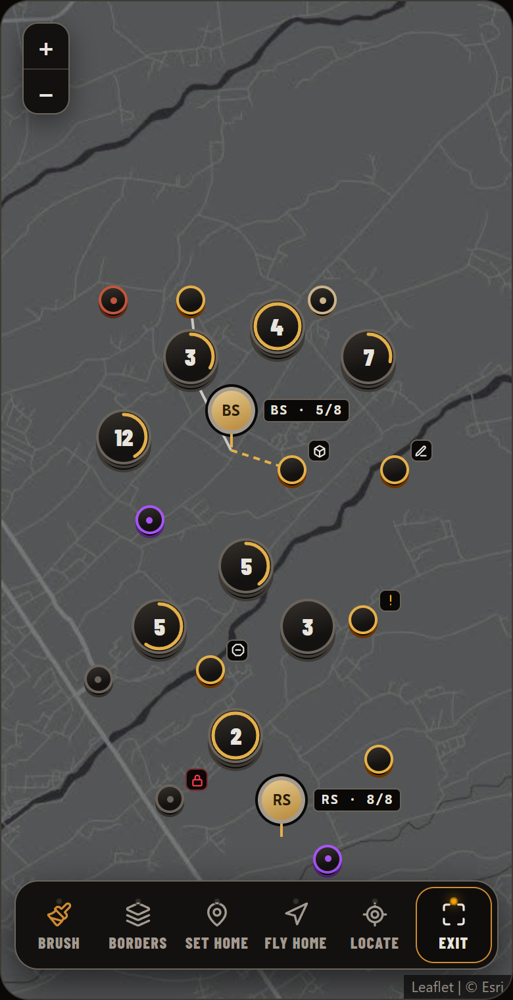
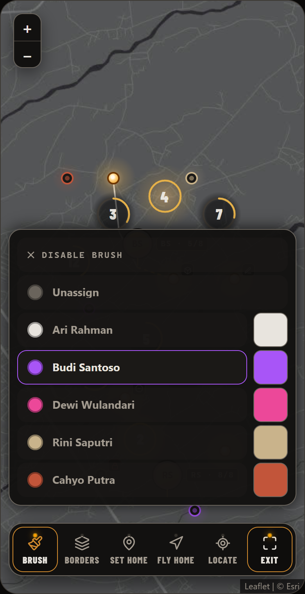

JOURNEY PLAN · MAP KEYS + SHOP MARKS
Still frames. The motion (keys 1 Lock-on / 2 Icon acts / 3 Lamp) only shows in the live page. A, B, C below use key motion 3 and the new key layout.
PC · 1440

TODAY gold number + gold ring + orange glow on every bubble; emoji pins; key names only under the mouse
A · LAMP a secured shop is a LIT lamp; bubble = white number + amber arc of how many are secured
B · SURVEY map-maker marks: shop = survey diamond; bubble = a dial, one tick per shop, amber = secured
C · TOKEN board-game pieces with a real edge under them; bubble = a small stack + amber arcPHONE · 390 (full map)

TODAY keys up top, far from the thumb
A · LAMP keys in one bar at the bottom, 58×58 each
B · SURVEY keys in one bar at the bottom, 58×58 each
C · TOKEN keys in one bar at the bottom, 58×58 each
NEW BRUSH LIST rows 44 tall, whole names, no orange slab